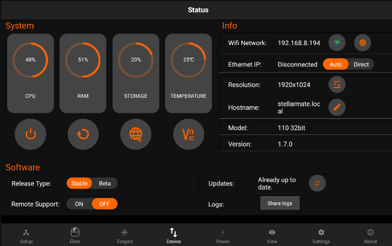
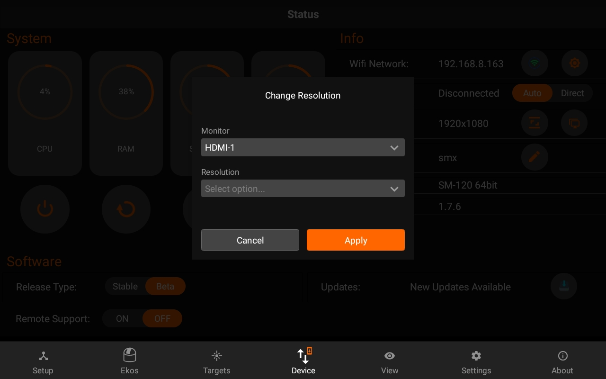
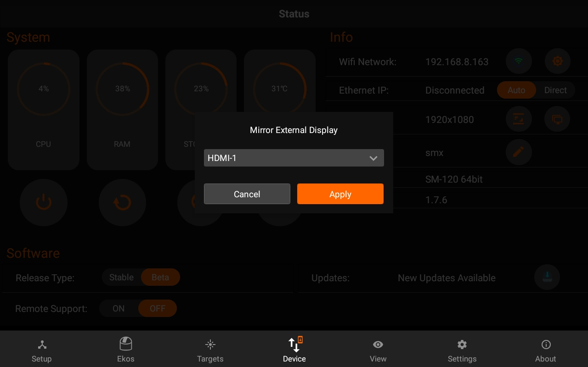
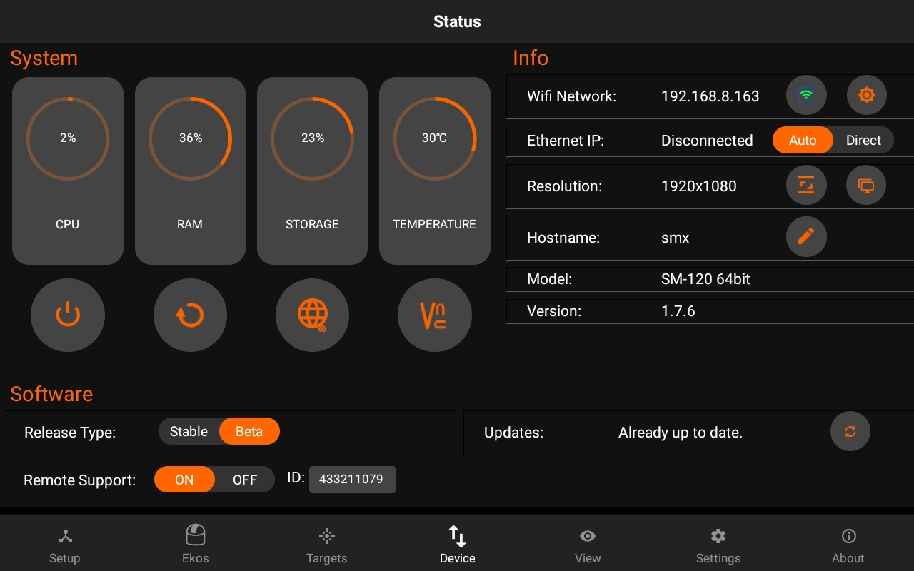
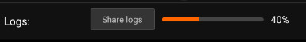
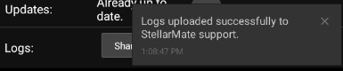

Device
The Device tab shows the health and information of your StellarMate. If StellarMate is connected to the internet, you can also run the software updater, install the latest firmware updates and also download the Teamviewer Software in your SM device.

You can perform the following functions:
- Change Name: You can change device name (and its hostname) to another name without any spaces. For example, if you rename it to myobservatory, the host name shall be changed to http://myobservatory.local.
- Connect to WiFi / Forget WiFi
- Connect to Home WiFi: Select a WiFi network as detected by StellarMate and then supply the password if it is protected. After a successful connection, please wait up to 2 minutes before using any of the unit functions again.
- Forget WiFi: WiFi network information is removed and StellarMate reverts to HotSpot mode (IP Address 10.250.250.10). If the Unit is connected to your LAN via Ethernet, you can still access it via its LAN IP address like before.
- Change Resolution: Select available monitor display and change it's resolution.
- 
- Change external monitor: If you are using model SMA-120 and it's connected with an external monitor. You can select that one.
- 
- Access Web Manager
- Access VNC Viewer
- Restart Device
- Shutdown Device
Software:
- Switch between Stable and Beta builds
- Update StellarMate Software
- Remote support: You can now toggle Remote support if SM support asks for its access to investigate the issues you face.

- Logs:
- Pressing on share logs will generate the latest logs which can be helpful for SM Support.


Following neccessary logs are mentioned below:
- INDI logs / Configuration files
- EkosLive
- Device manager
- Boot
- Network manager etc..